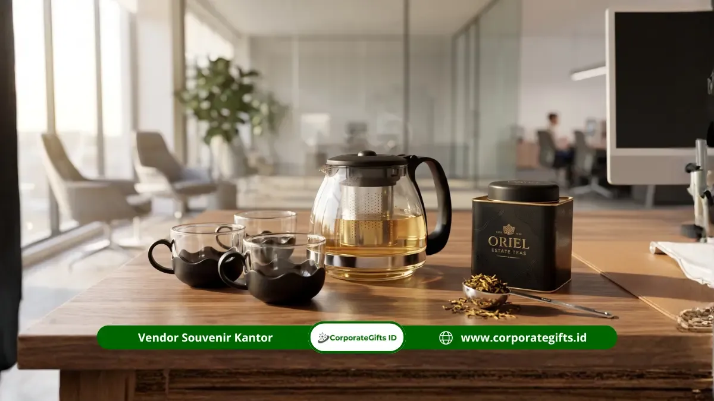

Corporate Gifts ID - 5 rekomendasi kombinasi souvenir tea set kantor yang paling populer dan digemari perusahaan modern adalah paket tea set dengan teh premium artisan, tea set dengan notes set kantor, tea set dengan tray kayu natural, tea set dengan hampers camilan ringan, serta tea set dengan rigid hardbox eksklusif bertema identitas visual korporat. Kelima perpaduan produk ini dipilih karena mampu menaikkan nilai prestise cinderamata tanpa harus membuat anggaran operasional pengadaan melonjak drastis.
Memilih kombinasi pelengkap yang tepat memberikan sentuhan personalisasi yang menyentuh hati bagi penerimanya. Souvenir tidak hanya menjadi pajangan statis di lemari, melainkan menjadi bagian dari ritual santai harian yang menenangkan saat bekerja di meja kantor maupun di rumah.
Melalui perpaduan item yang fungsional dan bernilai estetika tinggi, souvenir kantor jenis tea set ini mampu mempererat citra profesional perusahaan di mata jajaran karyawan, mitra kerja, maupun tamu kehormatan.
Poin Kunci Kombinasi Souvenir Tea Set Kantor:
- Persepsi Nilai Tambah: Menyatukan cangkir keramik dengan aksesori pendukung meningkatkan persepsi nilai hadiah jauh lebih tinggi dibanding produk tunggal.
- Daya Guna Nyata: Tambahan teh celup artisan atau buku catatan kerja membuat bingkisan dapat langsung dinikmati begitu diterima.
- Sentuhan Estetika Alami: Perpaduan material keramik glossy atau matte dengan nampan kayu pinus/jati menghadirkan nuansa mewah berkelas.
- Kekuatan Identitas Visual: Desain kemasan hardbox magnetik berwarna identitas korporat mengunci kesan elegan saat proses serah terima.
Daya Tarik Souvenir Tea Set Kantor sebagai Simbol Kehangatan Relasi
Tradisi menikmati teh di tengah padatnya jam kerja kantor mencerminkan budaya mindfulness, istirahat sejenak, dan momen diskusi yang hangat. Memberikan perabot minum teh sebagai cinderamata korporat menyampaikan pesan filosofis bahwa perusahaan peduli terhadap kesejahteraan mental (well-being) serta kenyamanan para koleganya.
Berbeda dengan barang promosi konvensional sekali pakai, satu set cangkir porselen memiliki masa pakai yang panjang (durable). Logo brand yang dicetak menggunakan teknik decal sablon bakar tahan gores akan terus terpampang di ruang kerja eksekutif selama bertahun-tahun.
5 Rekomendasi Kombinasi Souvenir Tea Set Kantor Paling Diminati
Berikut adalah lima opsi kombinasi paket tea set kantor yang telah teruji sukses meningkatkan kepuasan penerima pada berbagai perhelatan bisnis resmi:

Kombinasi elegan: cangkir keramik matte, pot teh porselen, tray kayu jati solid, dan notebook agenda kulit custom.
1. Tea Set dengan Teh Premium Artisan
Menambahkan kaleng tin berisi daun teh premium (artisan loose leaf tea) seperti Earl Grey, Chamomile, atau Green Tea Jawa ke dalam paket cangkir memberikan pengalaman sensory yang lengkap. Penerima dapat langsung menyeduh aroma teh pilihan tanpa harus membeli bahan teh terpisah.
2. Tea Set dengan Notes Set Kantor (Agenda Kulit)
Bagi kalangan profesional yang aktif dalam rapat, memadukan buku agenda kulit deboss logo dan pulpen metal ke dalam set tea set adalah pilihan cerdas. Paket ini mendukung produktivitas kerja sekaligus menemani waktu istirahat secara harmonis.
3. Tea Set dengan Tray Kayu Elegan
Nampan saji berbahan kayu mahoni atau jati dengan finishing food-grade glossy memberikan tatakan yang kokoh dan rapi di atas meja rapat direksi. Keberadaan nampan kayu langsung mengubah cangkir biasa menjadi set pajangan ruang kerja yang bernilai artistik tinggi.
4. Tea Set dengan Hampers Camilan Ringan
Untuk perayaan momentum istimewa seperti ulang tahun perusahaan, hari raya, atau apresiasi tutup tahun, menyandingkan tea set dengan toples cookies artisan, madu murni, atau camilan sehat menjadi daya tarik tersendiri yang dinikmati bersama keluarga rekan kerja.
5. Tea Set dengan Rigid Box Eksklusif Korporat
Bagi segmen komisaris atau tamu VIP kenegaraan, faktor pengemasan adalah kunci utama. Hardbox dengan lapisan kertas fancy bertekstur, penutup magnetik, dan bantalan busa die-cut presisi memastikan setiap cangkir tertata anggun sekaligus aman dari benturan logistik.
Tabel Matriks Kombinasi Tea Set, Kelengkapan, dan Alokasi Budget
Gunakan tabel acuan pengadaan di bawah ini untuk memetakan paket tea set yang selaras dengan profil penerima dan batas pagu anggaran instansi Anda:
| Nama Paket Kombinasi | Komposisi Item Utama | Karakter Kemasan | Estimasi Biaya Satuan | Segmen Rekomendasi |
|---|---|---|---|---|
| Daily Executive | 2 Cangkir Keramik + Piring Cawan + Notes Kulit A5 | Craft Window Box + Tali Goni | Rp135.000 - Rp195.000 | Staff Internal, Rekanan Proyek |
| Artisan Tea Blend | Teko Saring Porcelain + 2 Cangkir + 2 Tin Teh Herbal | Rigid Box Ribbon Handle | Rp220.000 - Rp310.000 | Manajemen Menengah, Mitra Vendor |
| Wooden Heritage | 1 Teko Keramik + 4 Cangkir Oolong + Nampan Kayu Solid | Hardbox Magnetik + Die-Cut Foam | Rp295.000 - Rp425.000 | Klien Korporat VIP, Pejabat Instansi |
| Festive Tea Hamper | Set Tea Pot Mewah + Madu Jar + Sendok Kayu + Artisan Cookies | Luxury Gift Box Gold Foil | Rp380.000 - Rp550.000+ | Direksi, Dewan Komisaris, Key Stakeholder |
Panduan Memilih Aksesori Pendamping Souvenir Tea Set Kantor
Agar paket cinderamata memiliki keserasian tema dan nilai guna maksimal, pertimbangkan tiga pilar kurasi berikut:
- Pertimbangkan Relevansi Fungsi Aksesori: Pastikan barang pelengkap menunjang momen minum teh secara praktis, seperti sendok teh stainless steel, infuser saring, atau biskuit pendamping.
- Sesuaikan dengan Anggaran yang Tersedia: Laporan riset industri merchandise korporat global menegaskan bahwa penambahan item fungsional bernilai Rp20.000-Rp40.000 mampu meningkatkan persepsi nilai souvenir hingga 60% lebih mewah di mata penerima.
- Selaraskan Tampilan dengan Identitas Visual: Pilih palet warna keramik, aksen pita kemasan, dan grafir logo yang sinkron dengan identitas brand book perusahaan agar terlihat sangat terencana.
Kustomisasi per Divisi dan Standarisasi Quality Control Produksi
Perusahaan berskala besar kerap membedakan paket hadiah berdasarkan karakteristik unit kerja. Divisi hubungan eksternal dan pemasaran sangat cocok dibekali paket nampan kayu untuk keperluan presentasi meja, sedangkan divisi operasional dapat diberikan kombinasi praktis bersama buku catatan.
Untuk pesanan dalam kuantitas ratusan hingga ribuan unit, pastikan vendor menerapkan dua tahapan kontrol mutu wajib:
- Spesifikasi Detail di Awal: Menentukan toleransi ukuran, ketebalan porselen, dan formula warna sablon cetak decal secara tertulis dalam Purchase Order (PO).
- Approval Mockup Sample Fisik: Melakukan validasi langsung terhadap satu unit sample cetak sebelum mesin lini produksi massal mulai berjalan.
Pertanyaan Seputar Souvenir Tea Set Kantor (FAQ)
Kesimpulan dan Konsultasi Souvenir Tea Set Kantor
Kombinasi souvenir tea set kantor yang dirancang cermat mampu menghadirkan kehangatan personal dan menegaskan profesionalitas brand institusi Anda. Dengan menyeimbangkan antara nilai guna harian, estetika material, dan kemasan berkelas, anggaran cinderamata perusahaan dapat dimanfaatkan secara optimal.
Kunjungi halaman katalog souvenir resmi kami atau konsultasikan paket kombinasi tea set kustom Anda bersama kurator ahli di Corporate Gifts ID.